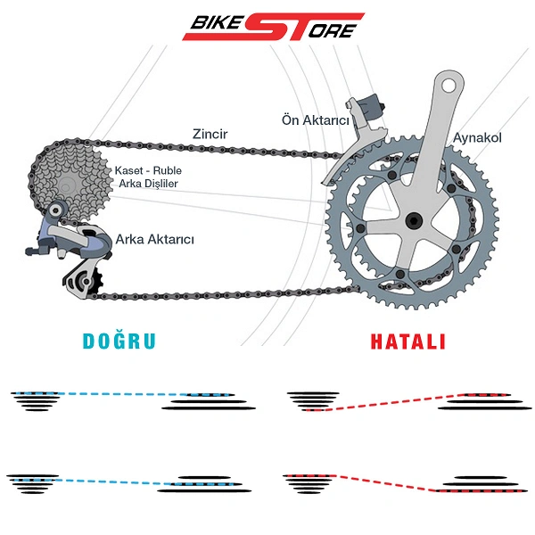
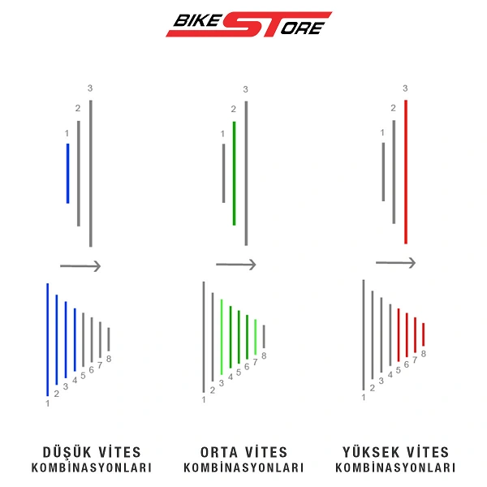

Bisiklette Doğru Vites Kullanımı
Bisiklette doğru vites seçimi ise seçtiğiniz bisiklet tipine göre ayrıca dikkat edilmesi gereken bir konu. Çoğu zaman kullanıcılar bütçelerine göre alabilecekleri en yüksek sayıda vites kombinasyonunu seçse de bu doğru bir yaklaşım değil. Örneğin hız yapmayı tercih etmeyen bir dağ bisikleti (MTB) kullanıcısı iseniz 3x10 vites tipi yerine 1x10 veya 11 bir model sizin için daha avantajlı olabilir. Şehir içi kullanım için de çoğu zaman 3x7, 2x9 gibi modeller yeterli olmaktadır. Düz araziler ve pratik kullanım içinse bazen sabit vitesli (Single Speed) bir model kullanmak oldukça mantıklıdır. Bazı modellerde de önde tek dişli bulunabilir bu da pratik kullanım, bakım kolaylığı ve hafiflik avantajı sağlayabilir.Vites kombinasyon sayısından daha önemli olan konu arka dişli veya ön dişli çapları yani diş sayılarıdır. Arka rublede en büyük yaprağın diş sayısı arttıkça ve önde de aynakolda en küçük yaprağın dişli sayısı azaldıkça yokuşları daha kolay ama daha yavaş çıkarsınız. Tam tersinde ise hız yapmanız kolaylaşır yani daha az pedal çevirerek daha çok güç harcar ama daha çok yol alırsınız.
Tırmanışlarda veya düşük hızlarda arka kasetteki en büyük dişli / ön vitesteki küçük dişli, düz yolda arka orta dişliler / önde orta dişliler, inişte veya yüksek hızlarda ise arka en küçükler ve önde en büyük büyük dişliler seçilmelidir. Arka viteste dişli sayısı azaldıkça alınan yol miktarı ve hız artar ön viteste ise tam tersi olur. Arka vitesler gidonda sağdaki vites kolları ile ön vitesler ise soldaki kol ile yönetilir.

Bisiklette Doğru Vites Kullanımı Nasıl Olmalı
Bisiklet vites kullanımında dikkat edilmesi gereken en önemli nokta ön ve arka dişlilerin birbirine paralel seçilmesidir. Aynakolun (Ön Vites) en küçük dişlisi, arkada rublenin tekere en yakın olan içe yakın büyük dişlileri ile kullanılır. Aynakolun en büyük dişlisi de arkada en küçük dişlilerle kullanılmalıdır. Zincirin açısının fazla olması yani çapraz kullanım zincire ve dişlilere ciddi zararlar verir. Çapraz vites kullanımı zincirin erken yıpranması ve kopması, arka artırıcı ayağının kırılması veya yamulması gibi sorunlara sebep olabilir. Sayfada yer alan görsellerde örnekleri görebilirsiniz.Örneğin 3x8 veya 24 vitesli şeklinde tabir edilen bir modelde önde 3 vites, arkada ise 8 vites olmak üzere 24 olası vites kombinasyonu bulunur fakat gerçekte sizin de fark edeceğiniz gibi 24 vites olarak tabir edilen bir bisiklette aslında yaklaşık olarak kullanılabilir 13 vites bulunur.
Ön vites 1'de yani en küçük dişlide iken arka vites: 1-2-3-4,
Ön vites 2'de yani orta dişlide iken arka vites: 3-4-5-6-7,
Ön vites 3'de yani en büyük dişlide iken arka vites: 5-6-7-8 de olabilir.
Vites dişli oranlarına veya kaset tipine markasına göre bu kombinasyonlarda küçük değişiklikler olabilir. Dikkat edilecek nokta zincirin çarpraz kullanılmamasıdır. Tek yaprak aynakol bulunan önde vites bulunmayan sistemlerde, ön dişli ortada olduğu, ince zincir, rublede yapraklar yakın olduğu ve özel dişli yapısı nedeniyle çapraz zincir sorunu oluşmaz. Yeni 1x12 veya 10 veya ,11 modeller özellikle bu konuda sorunsuz kullanım sunar.
